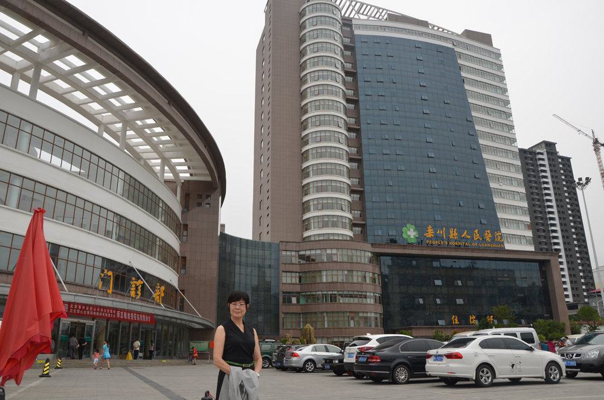

[培训案例]广西卫普助力钦州市钦南区15家医疗机构创优项目---首批项目启动
-
随着基层医院分级医疗政策的实施，基层医院越来越多的意识到提升自我管理，强化服务意识，走“优质服务 精细化管理”的发展道路是必然趋势。然而体制内的思维及诸多因素的限制导致自我从内部打破的局限性，这时候通过第三方咨询及借助外脑的力量，顺势变成了一条可持续发展的必经之路...
admin 2015-9-11
[培训案例] 广西卫普助力柳州市柳北区长塘卫生院咨询培训第二阶段顺利开展
-
广西卫普健康信息传播有限公司助力柳州市柳北区长塘镇卫生院开展《优质服务 精细化管理》咨询项目于2015年8月24日至8月28日开始第二阶段的工作。...
admin 2015-9-1
[培训案例] 医院管理专家李冰在河南省栾川县人民医院的培训
-

2015年8月20日， 红枫叶养老培训总监、中国护理之声主编—李冰老师刚结束完广西卫普健康信息传播有限公司与广西中医药大学附属瑞康医院联合举办的首届《医护合作大视野》高峰论坛的讲课，第二天就马不停蹄的赶往了河南郑州栾川县人民医院，因为那里也有一群积极上进好学的老师们在等待着李冰老师为大家做思想的洗礼、观念的引导、方法的教学。这所医院地处一个具有2个AAAAA,4个AAAA风景区的群山怀抱的的美丽山城。...
2015-8-20
[培训案例] 广西卫普助力钦州市钦南区基层医疗机构创优项目启动
-
随着三级分诊政策的实施，一级医院将担负越来越重的保障民众健康的责任，未来的基层医院的发展方向及评价标准将向着维护区域居民的健康程度来评定医疗工作的有效性，这些政策的颁布和实施最终将要求我们的基层医院提升自我的管理、自身的技能，优质的服务水平才能适应新形势下的医疗改革政策。这些措施最终福利的也将是民众。在这样的大环境下，钦州市钦南区卫生和计划生育局，主动面对机遇和挑战，以敏锐的政治嗅觉和高度负责的责任心，通过公平公正的招标程序与广西卫普健康信息传播有限公司合作开展《优质服务 精细化管理》咨询培训项目。第三方咨询机构的介入以提升基层医院的管理、建立人才梯队、建立精品科室、打造品牌医院。...
admin 2015-9-1